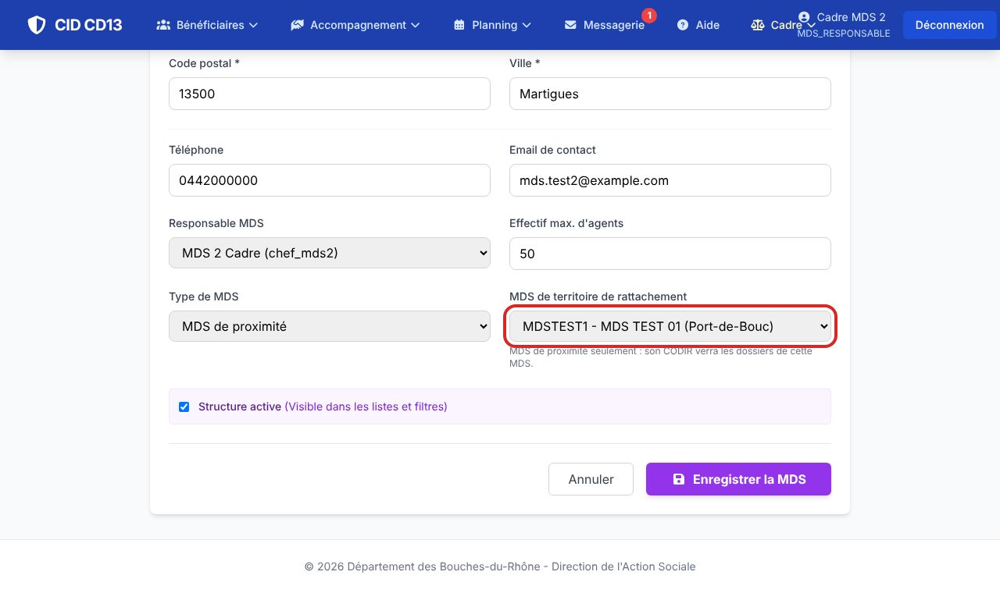
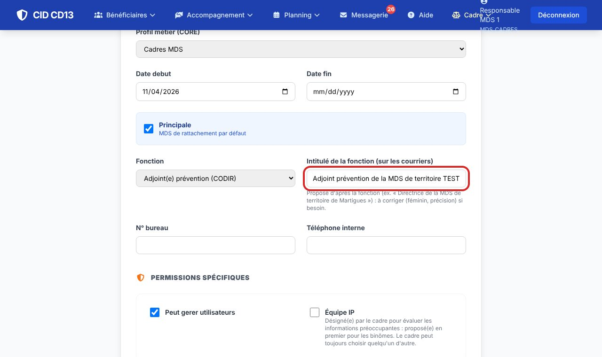
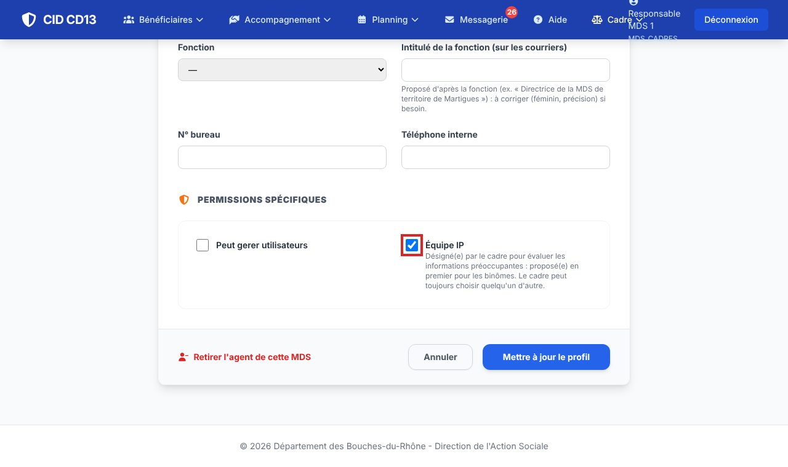
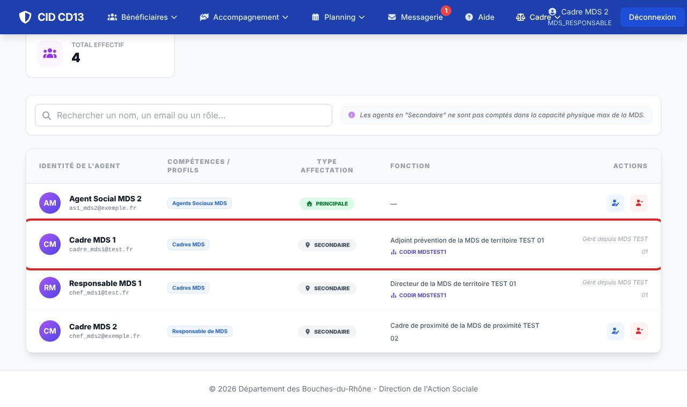

1Type de MDS et rattachement

- Sur la fiche de la MDS, Modifier : choisissez le type (MDS de territoire ou de proximité).
- Pour une MDS de proximité, choisissez sa MDS de territoire de rattachement, puis enregistrez.
2Fonction et intitulé

- Gestion des agents → icône de modification de l'agent.
- Fonction : directeur, adjoint enfance, adjoint prévention, médecin PMI, secrétaire général (CODIR), cadre ou adjoint de proximité, ou « Autre ».
- L'intitulé est proposé d'après la fonction et la MDS. Corrigez-le au besoin (« Directrice de la MDS de territoire de … »). Pour « Autre », écrivez-le (référent RSA…).
L'intitulé figure sous la signature des notifications AFASE, dans la demande d'AFASE, la remise des chèques service, le visa du rapport IP et la saisine. Vide : seul le nom apparaît.
3Désigner l'équipe IP

- Sur la même page, cochez Équipe IP pour les professionnels qui évaluent les informations préoccupantes, puis Mettre à jour le profil.
- Ils sont proposés en premier pour les binômes, avec la mention « équipe IP ». Vous restez libre de choisir quelqu'un d'autre.
4Le CODIR et les MDS de proximité

- Un agent dont la fonction est au CODIR de la MDS de territoire reçoit automatiquement un accès à chaque MDS de proximité rattachée : il en voit les dossiers.
- Dans la liste des agents de la MDS de proximité, il apparaît avec la mention CODIR et « Géré depuis … » : cet accès se modifie depuis la MDS de territoire, et suit son rattachement d'origine (désactivation, changement de fonction).
Cet accès ne donne pas la gestion des comptes de la MDS de proximité. Ses agents, eux, ne voient pas les dossiers de la MDS de territoire.
Bon à savoir
- Pilote des IP : le cadre de proximité en MDS de proximité, l'adjoint enfance en MDS de territoire ; à défaut, le responsable de la MDS.
- Le médecin PMI de la MDS de territoire couvre aussi les MDS de proximité : il peut y être proposé pour un binôme IP.
- L'adresse mail des agents reste interne : elle n'apparaît sur aucun courrier.
Cliquez sur une image pour l'agrandir. Le cadre rouge montre où cliquer ou quoi remplir. Toutes les données affichées sont fictives.